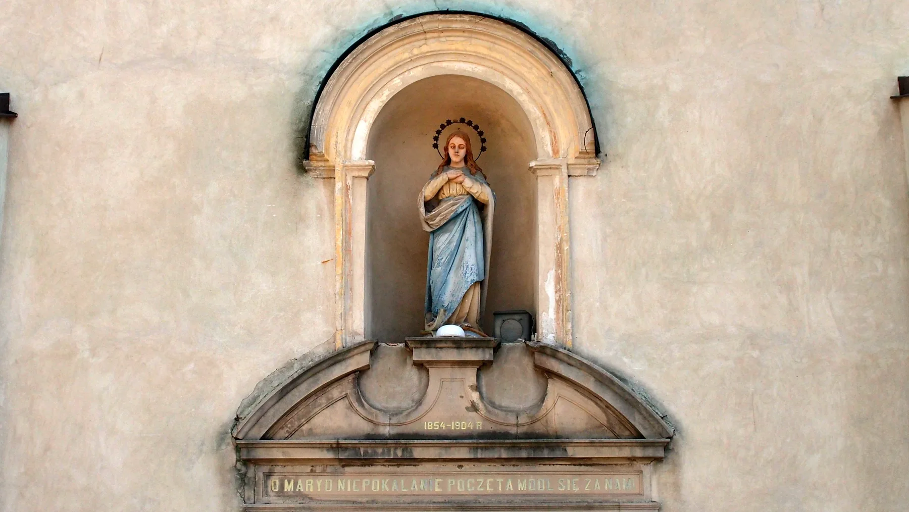
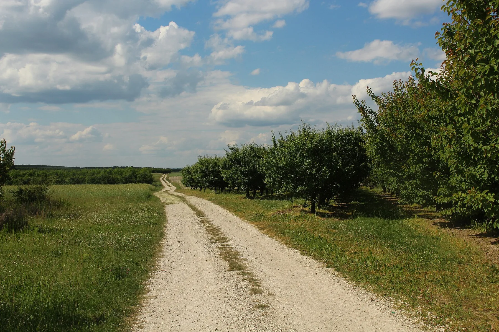
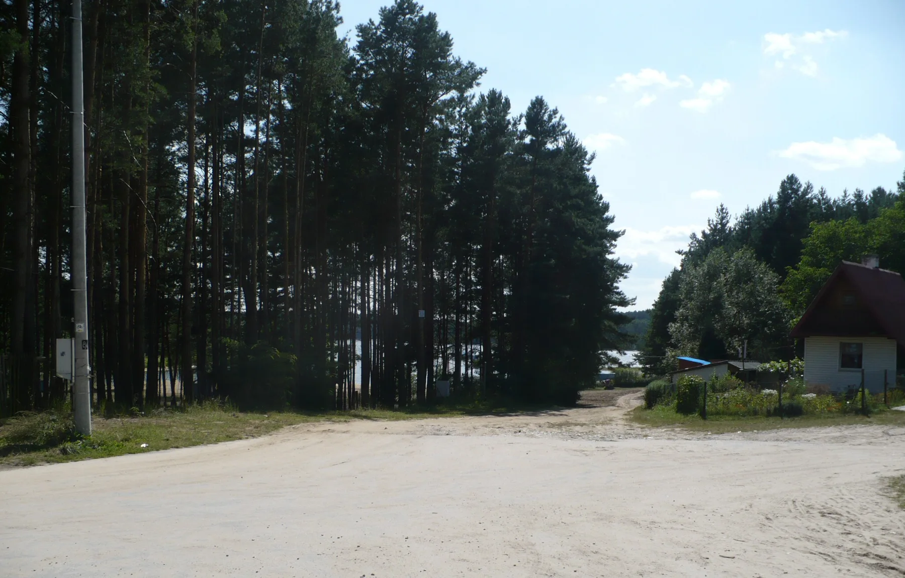
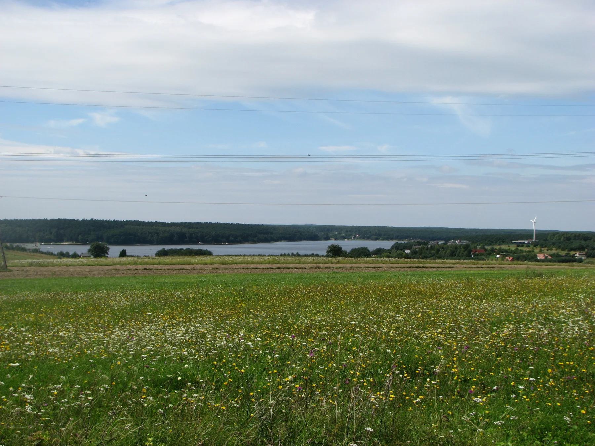
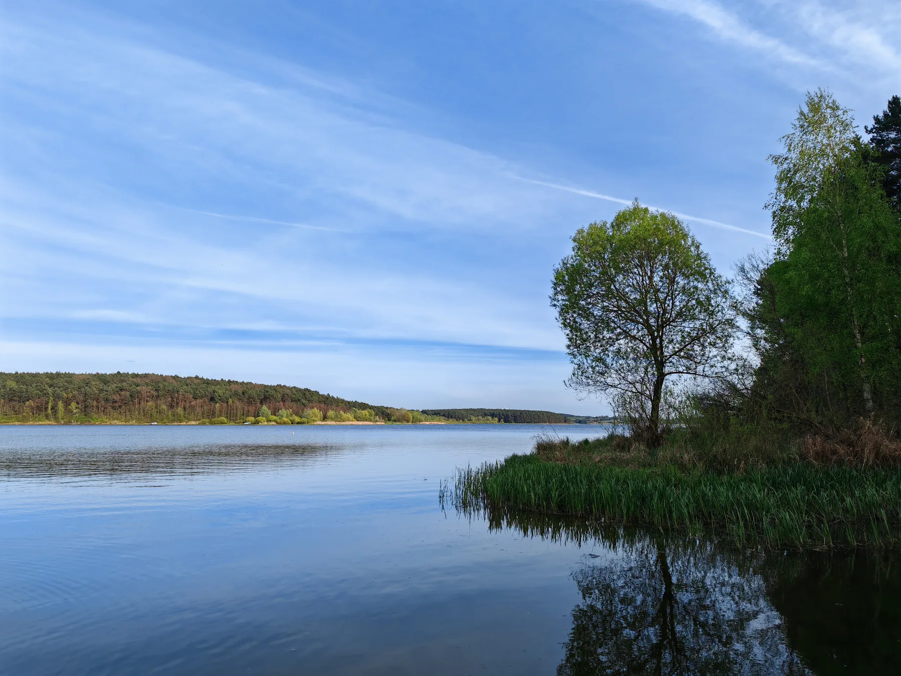

25lipca
Główny odpust
Świętego Jakuba Apostoła
Najważniejsze doroczne święto patrona parafii i spotkanie wspólnoty na jakubowym szlaku.
Słowo otuchy na dziś
Z życia wspólnoty
Ładowanie najnowszych informacji…
Dla tych, którzy są tu pierwszy raz
Od najstarszej wzmianki z 1326 roku, przez wojenną ruinę i wspólną odbudowę, po dzisiejszy przystanek na Drodze św. Jakuba. Poznaj ludzi i wydarzenia, które tworzą historię Kotuszowa.
Kalendarz wspólnoty
Stały rytm modlitwy i najważniejsze uroczystości parafialne.
Najbliższe dni
Sprawdzanie najnowszych intencji…
Porządek nabożeństw
Stały porządek według serwisu parafii. W święta i okresach szczególnych obowiązuje opublikowany plan intencji; zmiany można potwierdzić pod numerem 41 354 07 66.
Święta patronalne
Najważniejsze doroczne święto patrona parafii i spotkanie wspólnoty na jakubowym szlaku.
Odpust związany z kaplicą i wielowiekową tradycją Bractwa św. Józefa.
Dla pielgrzymów
25 lipca 2009 roku w Kotuszowie otwarto odcinek Drogi św. Jakuba prowadzący z Sandomierza przez Kotuszów i Kraków w stronę Santiago de Compostela. Muszla na elewacji kościoła przypomina, że parafia jest częścią europejskiej sieci pielgrzymich dróg.
Zobacz szlakZ życia parafii i miejscowości
Najświeższe potwierdzone informacje z Kotuszowa i lokalnej wspólnoty.
Ogłoszenia parafialne
Nie opublikowano jeszcze ogłoszeń parafialnych. Porządek nabożeństw znajdziesz w zakładce Wydarzenia.
Wiadomości z oficjalnego serwisu gminy
Wybór redakcyjny
Archiwalna zapowiedź odpustu i jubileuszu Bractwa, które odbyły się 25 i 27 lipca 2025 roku.
Zobacz ogłoszenieJubileusz przypomniał dekadę działań społecznych, religijnych i kulturalnych Bractwa działającego przy parafii w Kotuszowie.
Relacja: Anna Wołczyńska. Fotorelacja: Michał Kaczmarczyk, według podpisu w artykule.
Poznaj jubileuszAutomatyczny kanał pobiera publiczne wpisy z serwisu Miasta i Gminy Szydłów. Otwórz serwis gminy.
Dziedzictwo Kotuszowa
Nie tylko daty. Ludzie, miejsca i opowieści, które warto odkryć.
Świątynia w planie krzyża
Obecna murowana świątynia została ufundowana w 1661 roku przez Krzysztofa z Brzezia Lanckorońskiego. Czterokondygnacyjna wieża, kaplice św. Antoniego i św. Józefa oraz węższe prezbiterium tworzą charakterystyczną barokową sylwetę.
Podczas działań wojennych w 1944 roku kościół spłonął, a jego mury zostały poważnie naruszone. Odbudowę rozpoczął po wojnie ks. Antoni Sobczyk wraz z parafianami — przywrócono dach, wieżę, ołtarze i wyposażenie.
Opracowanie własne na podstawie opisu Diecezji Sandomierskiej. Fotografia przedstawia kościół współcześnie, nie stan sprzed wojny.
Miejsce, ludzie, pamięć
Źródłem tej części jest książka ks. Jana Wiśniewskiego z 1929 roku. Skany pokazują oryginalny tekst; opis obok jest współczesnym opracowaniem. Dawne relacje odróżniamy od ustaleń i fotografii współczesnych.
Kliknij datę i odkryj opowieść
Ludzie, którzy zostawili ślad
Przybył do spalonego i zaminowanego Kotuszowa 25 maja 1945 roku. Urządził kaplicę w kruchcie, zorganizował kuchnię dla mieszkańców i przez 57 lat prowadził odbudowę świątyni oraz życie parafii.
Odbudował wieżę i dzwonnicę, wyposażał kościół, ufundował dom dla duchownego i szpital oraz wprowadził Bractwo św. Józefa.
Dawny prebendarz, a później proboszcz. Wznosił zabudowania parafialne, plebanię i nowy ołtarz św. Józefa.
Rozwijał jakubowy charakter parafii, wspierał odtworzenie Małopolskiej Drogi św. Jakuba i wprowadzenie relikwii Apostoła do świątyni.
W źródłach odnotowano m.in.: Pawła (1326), Pawła Lisieckiego (1677), Józefa Cmielińskiego (1748), Wawrzyńca Sapińskiego (do 1778), Pawła Sosińskiego (1778–1805), Antoniego Walczewskiego (1805–1826), Jana Skibickiego (do 1848), Kolomana Myrczyka (1848–1886), Marcelego Gąsiorowskiego (do 1892), Antoniego Toczyłowskiego (do 1899), Adolfa Zarzyckiego (1900–1913), Tomasza Czaplickiego (do 1915), Kazimierza Wilamowskiego (do 1919) i Jana Górkę. Daty pokazują stan zachowanych opracowań, a nie kompletny spis.
Przejdź do opracowania źródłowegoKotuszów na dawnych arkuszach
Trzy warstwy czasu pozwalają zobaczyć, jak zmieniały się zapis miejscowości, drogi i krajobraz. Otwieramy oryginalne repozytoria, aby zachować pełną jakość i opis pochodzenia.
Niemiecka Karte des Westlichen Russlands w skali 1:100 000 — oparta na wcześniejszych pomiarach topograficznych regionu.
Otwórz skan 600 dpiMapa topograficzna w skali 1:84 000 ze zbiorów Instytutu Geografii i Przestrzennego Zagospodarowania PAN. Biblioteka podaje przedział datowania 1885–1917.
Zobacz mapę w bibliotece cyfrowejPaństwowy Geoportal udostępnia współczesne zdjęcia lotnicze, rzeźbę terenu oraz wybrane archiwalne warstwy topograficzne.
Przejdź do GeoportaluFotografie i świadectwa
Autentyczne źródło · 1929
Otwórz rozdział z książki ks. Jana Wiśniewskiego. Znajdziesz w nim opis przedwojennego wyposażenia, nazwiska proboszczów oraz historie szpitala-przytułku, szkoły i kościelnych fundacji.
Biblioteka Cyfrowa UMCS · wydanie z 1929 r. · domena publiczna

Każda fotografia ma podpis i źródło. Przy archiwalnych zdjęciach, których autor nie został podany, nie przypisujemy autorstwa redaktorowi opracowania. Wykaz praw i warunki publikacji znajdują się w dokumentacji materiałów.
W ołtarzu głównym znajduje się otoczony szczególną czcią obraz Matki Bożej Łaskawej, zwanej Kotuszowską.
Wśród zachowanych pamiątek są szaty i naczynia liturgiczne, relikwiarze, lichtarze, krucyfiksy oraz starodruki.
Symbol na fasadzie przypomina o patronie świątyni i o pielgrzymach podążających europejskim Camino.
Poza murami świątyni
Kotuszów i należąca do parafii Chańcza — sady, drogi i krajobraz nad wodą. Fotografie współczesne, opisane miejscem i datą wykonania.




Pamięć o bliskich
Wyszukaj grób, sprawdź jego położenie i znajdź informacje dla opiekunów.
Kotuszów · Polskie Cmentarze
Wyszukiwarka wskazana przez parafię pozwala odszukać grób po nazwisku, imieniu, datach lub oznaczeniu sektora, rzędu i numeru.
Otwórz wyszukiwarkę grobówZobacz świątynię
Od bramy do ołtarza — i spojrzenie z góry. Wybierz widok i odkrywaj detale.
Przystanek pierwszy
Spójrz na świątynię od strony historycznego wejścia. Kamienna brama otwiera widok na barokową bryłę i wysoką wieżę kościoła.
Zdjęcie i licencjaDodane przez parafię
Klikaj strzałki bezpośrednio w widoku, aby przechodzić między miejscami. Punkty „i” odkrywają detale. Spacer wykorzystuje fotografie — nie jest panoramą 360° ani modelem 3D. Przybliżanie: suwak lub Ctrl + przewijanie.